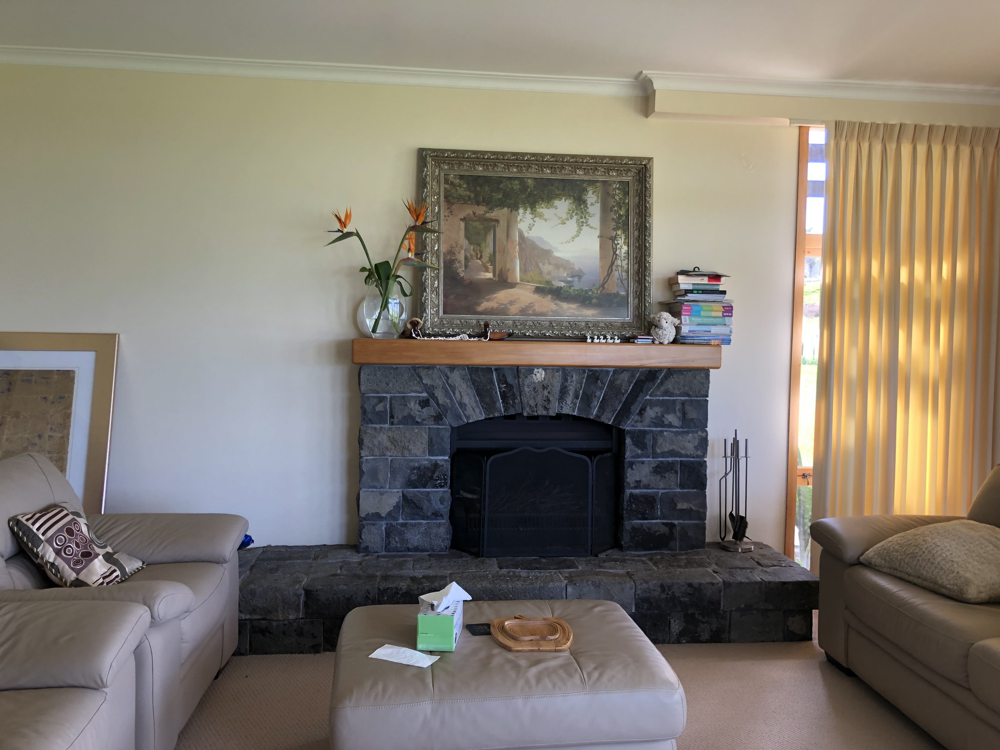

This project has largely been an exploration into projective geometry. The bulk of Part A was to ensure that we can define a homography matrix for a projective transform, i.e. A transformation of one perspective of a light source to another. An example of this can be two different people looking at the same wall. Each person's perspective of the wall will be different from another, but if we define the correct corresponding points, we are able to define a transformation that allows one person to transform their perspective to anothers'.
As an example, here we have two perspectives of the same fireplace: P1 and P2.
Here, we transform P1 using the homography matrix to obtain an image highly similar to P2. We transform P2 using the inverse of the homography matrix to obtain an image that looks like P1.
Using these homography matrices, we can also gain more detailed insight into aspects of an image that aren't very apparent to human beings. E.g. if a camera captures information about the floor design but as humans we cannot interpret it very well from its perspective, we can apply a transform to see it more clearly. To make this clear, I calculated a projection of the cushion in the middle of P1 to obtain a top-down view:
An interesting application of projective transforms includes stitching together mosaics of various images. An example can be seen below. At this stage, I hadn't exactly have had much time to blend the images together smoothly just yet.

I learned a lot to do with projective matrices, camera positions, and light sources in this project!. I really enjoyed learning about the underlying mathematics that has to do with projection because it can be extrapolated to AR or VR or other graphics-related tech that I'm interested in. Looking forward to projecting an sythetic image onto walls for my bells & whistles! Will be doing more later.
I need to decorate my room. Fortunately, I'll be able to do that digitally!


A key part of calculating prospective transformation matrices is we need at least 4 points of correspondence between images that we are trying to warp together. It was very tedious to manually mark those points, so now I present an automated way of doing so.
First thing, we will find all the harris corners from both images. Below shows an example of the harris corners:
We hope that two images that capture different perspectives of the same object will share corners with one another. However, searching through this entire space is too tedious, and thus we will need to narrow down the points we want to look at. A naive way to do this is by taking the "brightest" N points, e.g. the N points that are most likely to be corners as determined by the algorithm. However, as we see below, many of the brightest points are concentrated in the same area. To avoid this, we use the novel ANMS algorithm to obtain a better spread of points. Top 500 brightest on the left, ANMS on the right.
As we see, this allows us to obtain a much better spread of points.
Next, we sample a small 40x40 window on each edge, and downsample this feature to be an 8x8 window instead. We then find the nearest two neighbor of each feature, matching up the strongest correlating features. After we have a certain number of corresponding points, we can then use the RANSAC procedure to obtain a robust set of points to compute our homography matrix. Below are some of my results of blending images from my drone footage: